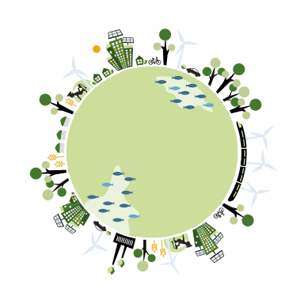

Anders investieren für eine andere Zukunft
WILLKOMMEN!
Was wäre der Nutzen für das Klima, wenn Ihre Pensionskasse einen Teil ihres Geldes in erneuerbare Energien investieren würde?
Mit diesem Rechner können Sie abschätzen, welchen positiven Beitrag für den Klimaschutz Investitionen in erneuerbare Energien leisten können.
Um diesen Rechner zu nutzen, brauchen Sie bloss Informationen zum Anlagevolumen Ihrer Pensionskasse.
Im Folgenden sehen Sie eine Übersicht der Resultate, wie sie der Rechner liefert: Wie viele erneuerbare Kraftwerke könnten erstellt werden? Wieviel sauberer Strom könnte produziert werden? Wie viel CO2-Emissionen könnten vermieden werden?
You can download all graphical elements and tables showing the results of your analysis, for use in both external and internal communication products, including social media.
For information about the limitation of the calculation produced by this tool, please refer to the methodology chapter in the report for more details.
Data inputs: it's your turn!
Now you have the possibility to create your own case study! Simply edit the following fields. The changes are automatically saved in your browser, and you can go back to default just by pressing the “Reset” button.
For illustrative purposes, we have inserted similar numbers to the one we use in a case study of Norway’s sovereign wealth fund, which own almost 1 trillion USD in assets. Change these numbers with your own to create your personalized case.
Summary of results: Infographic
This is a graphical summary of all the main results. Elements are pre-arranged so that you can simply take a screenshot of the page, and have a product ready to be used.

in renewable energy

The dividing of investments in the various technologiesi
28%
hydro
6%
bioenergy
36%
wind
1%
geothermal
29%
solar pv
1%
concentrated
solar power
QUELLE
Diese Seite basiert auf einem Rechner von WWF Norwegen http://recalc.wwf.no/